Overview
Measurely is a senior capstone project completed over two semesters. It is an assistive baking device designed to restore independence in the kitchen for people living with arthritis, Parkinson's, or similar mobility conditions. View the project website at measurely.co.
Baking requires a demanding combination of gross motor strength, such as pouring heavy ingredients, and fine motor precision, measuring spices, leveling spoons. For millions of people, those fine motor requirements present an insurmountable barrier. Managing physical tremors while simultaneously following complex recipe steps creates what researchers call Cognitive-Motor Interference (CMI), which significantly increases error rates and safety risks in the kitchen.
Existing assistive devices address only isolated problems. Large-button scales exist but don't guide the user; automatic dispensers exist but don't handle bulk ingredients. Measurely combines both in an automated dispenser that handles precise small-ingredient measurements, paired with an integrated scale and guided display that walks the user through each step.
System Components
- Dry ingredient dispenser, an auger/screw mechanism driven by a DC motor and linear actuator
- Integrated scale, an HX711 load cell with NeoPixel LED ring feedback
- Guided display, an Arduino Giga screen with tactile mechanical keyboard navigation
- Electronics & integration, covering circuit design, power management, CAD for electronics housing, and the universal key mechanism
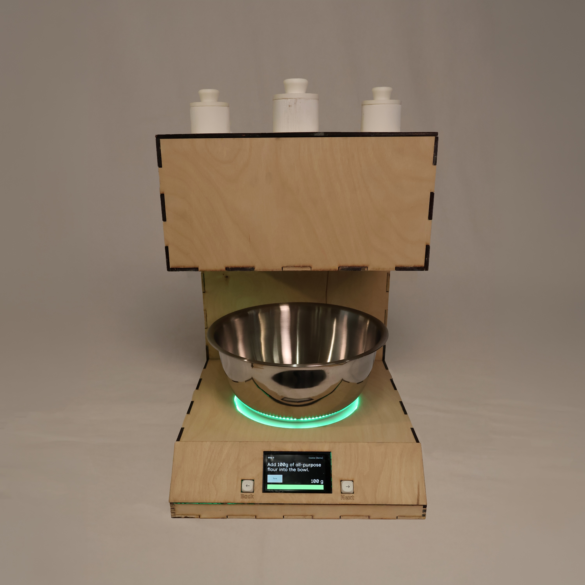
Dry Ingredient Dispensing
The final dispenser uses an auger/screw mechanism driven by a DC motor. A single motor-driven key inserts into each spice slot's keyhole to rotate the auger, dispensing a precise amount. The key is positioned and engaged using an H-Bridge motor driver controlling a linear actuator, compact, reliable, and quiet compared to earlier approaches.
Linear actuator extending and retracting to position the DC motor key into the auger slot. Testing engagement timing before the universal key mechanism was finalized.
Enclosure Fit
After printing the first enclosure, I found the DC motor fitting was slightly too short and the canal for the linear actuator was too narrow, causing the key to scrape during operation. I remeasured both, updated the CAD, and reprinted. I also discovered the bottom enclosure was unnecessary, as the linear actuator's consistent movement eliminated the shaking that had required extra support in earlier designs.
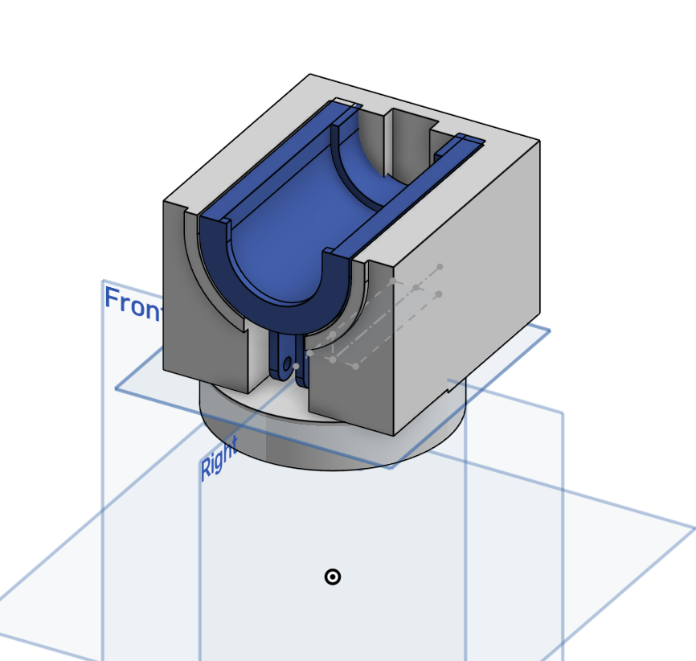
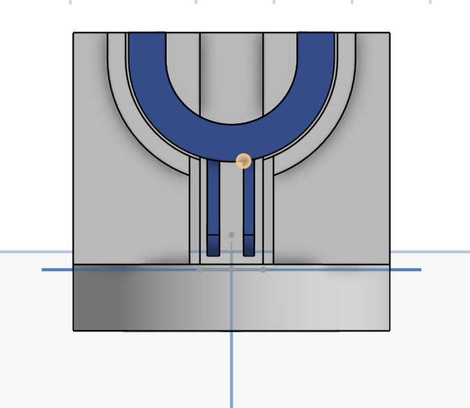
dispense_tsp() Function
I wrote the dispensing logic as a modular dispense_tsp(tsp) function. Each teaspoon maps to a calibrated run duration, so the motor runs for a set amount of time rather than counting rotations. The function extends the linear actuator to engage the key, runs the DC motor for the corresponding duration, then retracts. This made it straightforward to call with different quantities from Sam's interface code.
dispense_tsp() / Dispensing Control Code
// Linear actuator
const int PWMA = 4, AI1 = 5, AI2 = 6, STBY = 7;
// DC motor
const int dcMotorPin = 8;
const int actuatorSpeed = 150;
const int actuatorExtendMs = 2000;
const int actuatorRetractMs = 2000;
const int msPerTsp = 1850; // calibrated ms per teaspoon
void loop() {
dispense_tsp(1); // pass number of teaspoons
delay(5000);
}
void dispense_tsp(float tsp) {
// 1. Extend linear actuator
digitalWrite(AI1, HIGH); digitalWrite(AI2, LOW);
analogWrite(PWMA, actuatorSpeed);
delay(actuatorExtendMs);
analogWrite(PWMA, 0);
delay(500);
// 2. Run DC motor for calibrated duration
digitalWrite(dcMotorPin, HIGH);
delay((int)(tsp * msPerTsp));
digitalWrite(dcMotorPin, LOW);
// 3. Retract actuator
digitalWrite(AI1, LOW); digitalWrite(AI2, HIGH);
analogWrite(PWMA, actuatorSpeed);
delay(actuatorRetractMs);
analogWrite(PWMA, 0);
}Universal Key
After Lily's testing revealed that the auger screw could end up in a different rotational position after each dispensing cycle, we realized our key insertion would fail unless the keyhole happened to line up. We needed a key that would engage reliably at any insertion angle. After consulting three ITLL engineers, I settled on a dog clutch, a mechanism used in car transmissions where interlocking teeth engage regardless of entry angle. I added a slight ramp on each tooth to guide misaligned teeth into their slots during rotation.
I added a copper tape contact switch at the engagement point. While the key is rotating and not fully seated, the circuit stays open. Once the teeth slot fully into place, the copper tape pads touch and close the circuit, signaling the Arduino that engagement is confirmed and it can start counting dispense time. This turned a mechanical precision problem into an electrical one.
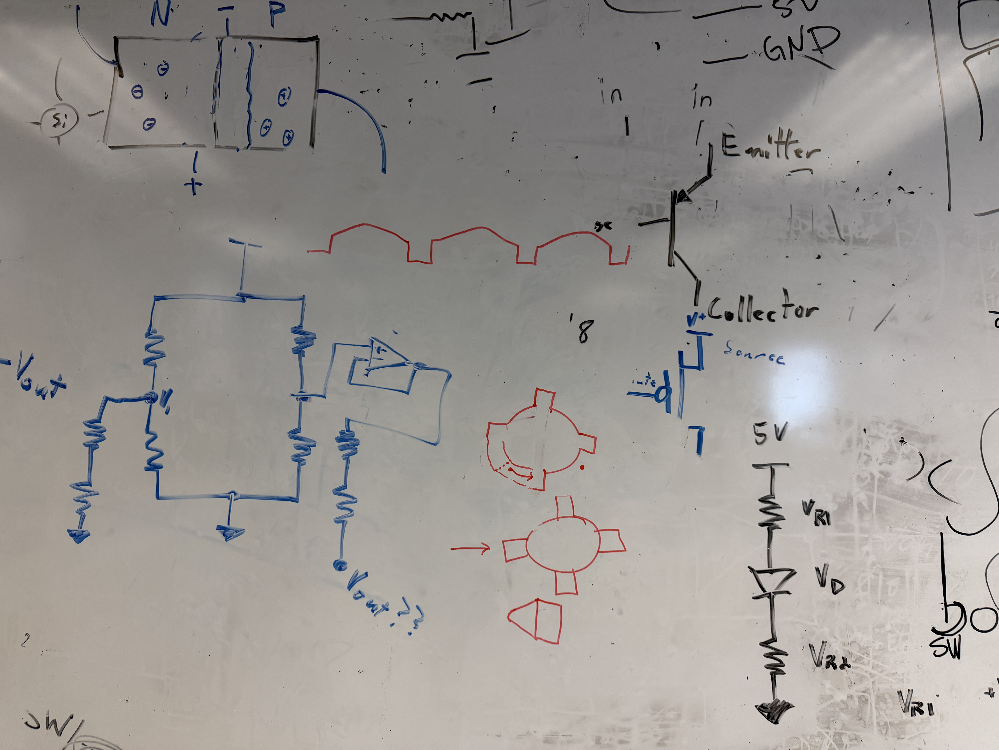
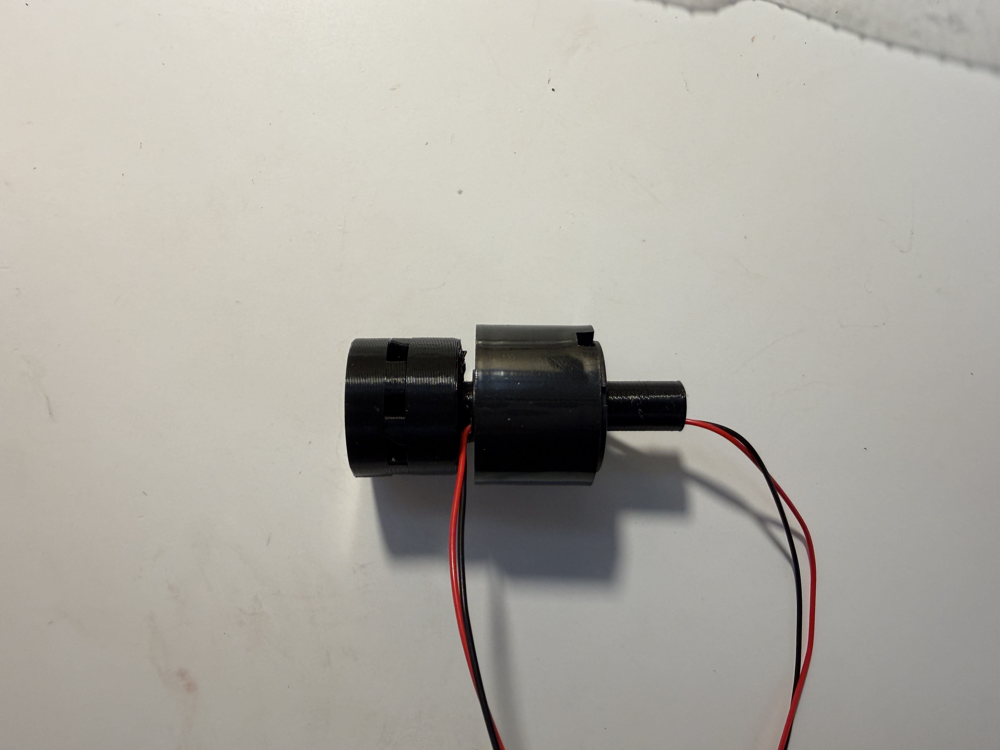
To prevent wiring from twisting as the assembly rotates, I integrated a slip ring, an electromechanical connector that transfers power and signals from a stationary wire to a rotating component. I designed a rod that attaches to the DC motor shaft, press-fits into the inner portion of the slip ring, and mounts one half of the dog clutch on the opposite end.
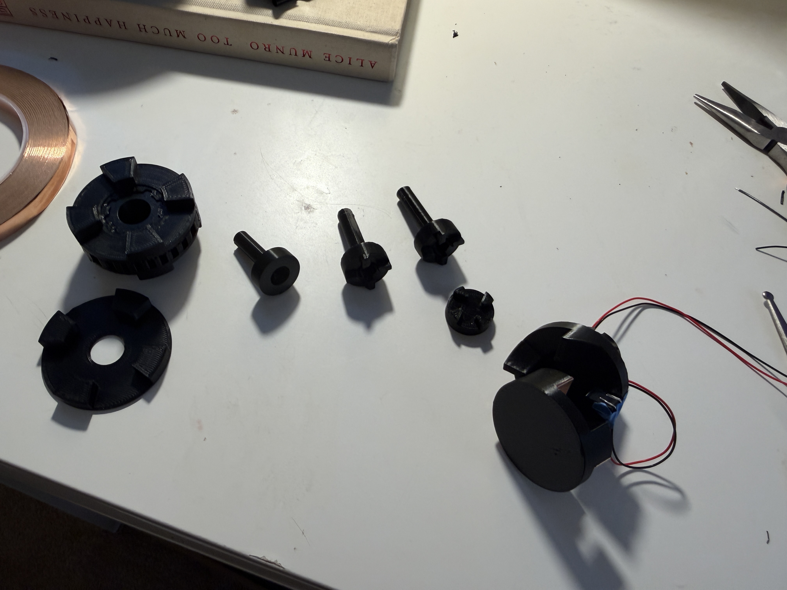
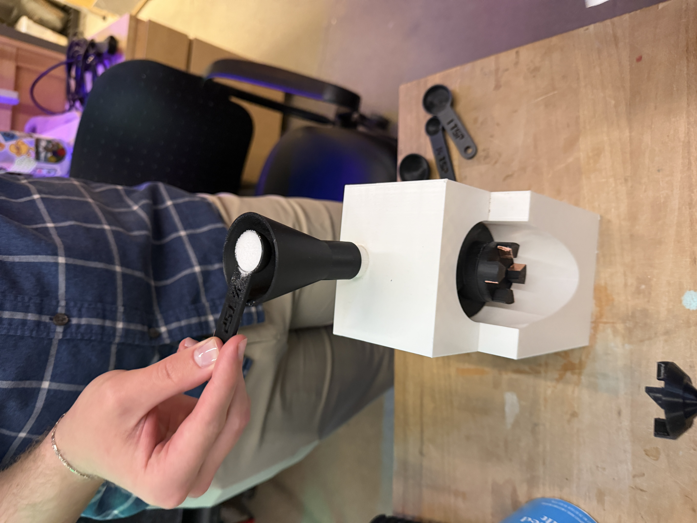
Universal Key / Engagement-Triggered Dispense Code
const int inputPin = 3; // copper tape contact
const int PWMA = 4, AI1 = 5, AI2 = 6, STBY = 7;
const int dcMotorPin = 8;
const int actuatorSpeed = 50;
const unsigned long spinTimeMs = 1800;
void loop() {
// Start extending + spinning simultaneously
digitalWrite(AI1, HIGH); digitalWrite(AI2, LOW);
analogWrite(PWMA, actuatorSpeed);
digitalWrite(dcMotorPin, HIGH);
// Wait for copper tape to close (engagement confirmed)
while (digitalRead(inputPin) == HIGH) { /* keep trying */ }
// Start timing ONLY from confirmed engagement
unsigned long startTime = millis();
while (millis() - startTime < spinTimeMs) { /* keep spinning */ }
digitalWrite(dcMotorPin, LOW);
// Retract
digitalWrite(AI1, LOW); digitalWrite(AI2, HIGH);
analogWrite(PWMA, actuatorSpeed);
delay(2000);
analogWrite(PWMA, 0);
delay(5000);
}Iteration and Reinforcement
When we first loaded the screw with spice and tested, the jam force broke the key. The walls of the attachment are thin by necessity (they must fit through the center of the slip ring), leaving little material at the point of highest stress. I made three structural improvements in CAD:
- Added a chamfer at the stress concentration point
- Increased print infill and made the center column solid past the attachment joint
- Added a reinforcement ring at the base to prevent cracking under load
Tolerances were 0.005 in. Even printing the same file multiple times produced small inconsistencies, so I printed three copies and test-fit each to find the best match.
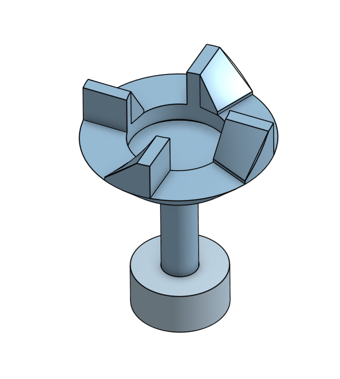
I also resolved a stepper motor issue during this phase. The motor was moving erratically on startup because it received a small pulse of current before the Arduino fully initialized. Adding a pull-down resistor on the step pin absorbed that initial current, eliminating the spurious movement, a small detail critical to dispensing accuracy.
Universal key engaging the auger screw, dispensing, and retracting. The dog clutch teeth self-align regardless of the auger's resting rotation angle — no manual positioning needed.
Prototyping / What Didn't Make It
Initial Circuit Planning
Before building anything, I mapped out every electronic component and its pin requirements to confirm the Arduino Giga could handle the full system.
| Component | Analog Pins | Digital Pins |
|---|---|---|
| DC Motor | - | 8 |
| 5 kg Load Cell ×2 | - | 4 |
| Liquid Pump | - | 1 |
| Linear Solenoids | - | 2 |
| LED Light Strip | - | 2 |
| Total | 0 | 17 |
Solenoid + Stepper Motor
The first dispenser concept used a linear solenoid as a piston to push a spring platform and release small amounts of spice. To service multiple slots with one solenoid, I mounted it on a stepper motor that rotated it into position.
I 3D printed a custom adapter to seat the solenoid on top of the motor in four quick iterations. Two constraints emerged from testing. The solenoid wire required limiting rotation to ±180° to avoid tangles, and the energize/de-energize delay needed to be at least 80 ms to let the plunger fully extend.
Solenoid plunger actuating on the custom stepper-mounted adapter. The mechanism cycled reliably without sugar, but jammed when real material was introduced.
Initial Solenoid + Stepper Test Code
#include <Stepper.h>
const int stepsPerRevolution = 2048;
const int stepsPer60Deg = stepsPerRevolution / 6;
const int maxSteps = stepsPerRevolution / 2; // limit to 180°
const int solenoidPin = 2;
Stepper myStepper(stepsPerRevolution, 3, 5, 4, 6);
int currentSteps = 0;
int direction = 1;
void pokeSolenoid() {
digitalWrite(solenoidPin, HIGH);
delay(80);
digitalWrite(solenoidPin, LOW);
}
void setup() {
pinMode(solenoidPin, OUTPUT);
myStepper.setSpeed(8);
}
void loop() {
if (currentSteps >= maxSteps) direction = -1;
if (currentSteps <= -maxSteps) direction = 1;
myStepper.step(direction * stepsPer60Deg);
currentSteps += direction * stepsPer60Deg;
delay(300);
pokeSolenoid();
delay(500);
}Spring-Platform Failure
Integration testing exposed a fundamental flaw. The small tolerance gap required for the spring platform to slide allowed sugar granules to get trapped and jam the mechanism. Even stronger springs wouldn't solve it; PLA can't form an airtight seal, and sugar reaching the back of the device would make it impossible to clean.
Sugar granules jamming the spring-platform after just a few cycles. The tolerance gap needed for the platform to slide left an unsealed path for particles — impossible to clean with PLA.
After research and consulting three ITLL engineers, I switched to an auger/screw mechanism, since spices are meant to enter the screw's threads rather than be kept out, which works with the material rather than against it.
Rack and Pinion
The first positioning approach used a stepper motor carousel + rack and pinion to move a motor horizontally over the correct slot. I CADed the gear myself (first time), laser cut the flat pieces, and 3D printed the gear. The hardware tested well in isolation, but wiring multiple stepper drivers simultaneously caused electrically floating pins to generate random motor pulses; idle steppers vibrated uncontrollably. The fix library made motors loud and stuttery, so I replaced the whole approach with the H-Bridge + linear actuator.
Integrated Scale
The scale needed to accurately measure ingredient weight and give users a clear, intuitive visual signal so they know when to stop pouring without watching a number on a screen.
Hardware Design
The scale uses a 5 kg HX711 load cell. To convert torque into weight accurately, I designed thin spacers using calipers-measured M4 and M5 hardware. The surface is a three-layer acrylic stack. The first layer mounts the load cell, the second spaces the screw head from the shank, and the third (slightly translucent) serves as the decorative top surface and diffuses the LED light evenly. The diameter is 7 inches, with the top plate extending 0.2 inches larger to accommodate the NeoPixel strip underneath.
One challenge was the gray metal screw was visible through the translucent top plate. I tried opaque tape, paper inserts, and surface sanding, all of which looked unprofessional. The fix was painting the screw white; the top layer's light-diffusing properties blurred the slight texture irregularities from the paint, producing a clean result.
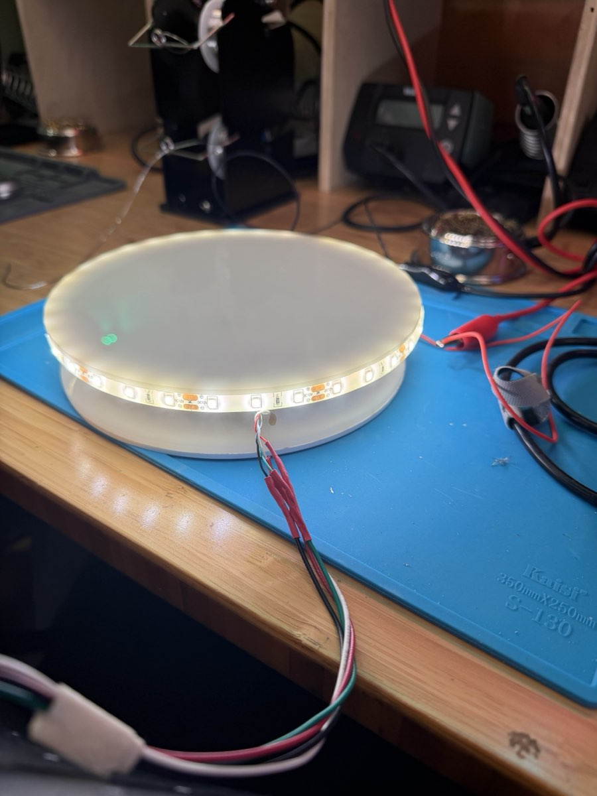
NeoPixel Feedback
Based on mentor feedback from Dr. Zarske, I upgraded from a simple on/off LED strip to an Adafruit NeoPixel ring (94 pixels) that fills progressively as weight approaches the target and changes color based on accuracy, yellow for underweight, green for on-target (±5 g), and red for overweight. An engraving on the top surface guides users to center their bowl.
Scale + NeoPixel Control Code
#include <Adafruit_NeoPixel.h>
#include "HX711.h"
#define PIN 6
#define NUMPIXELS 94
#define DOUT 3
#define CLK 2
#define CALIBRATION_FACTOR -205.0
#define TARGET_WEIGHT_G 272.155
#define TOLERANCE_G 5.0
Adafruit_NeoPixel pixels(NUMPIXELS, PIN, NEO_GRB + NEO_KHZ800);
HX711 scale;
void setup() {
scale.begin(DOUT, CLK);
scale.set_scale(CALIBRATION_FACTOR);
scale.tare();
pixels.begin();
pixels.clear();
pixels.show();
}
void loop() {
float weightG = scale.get_units(3); // average 3 readings
if (weightG < 0) weightG = 0;
uint32_t color;
if (weightG > TARGET_WEIGHT_G + TOLERANCE_G) color = pixels.Color(255, 0, 0); // Red
else if (weightG >= TARGET_WEIGHT_G - TOLERANCE_G) color = pixels.Color(0, 255, 0); // Green
else color = pixels.Color(255, 150, 0); // Yellow
// Fill arc proportional to weight
int numLit = (int)((weightG / TARGET_WEIGHT_G) * NUMPIXELS);
if (numLit > NUMPIXELS) numLit = NUMPIXELS;
pixels.clear();
for (int i = 0; i < numLit; i++) pixels.setPixelColor(i, color);
pixels.show();
delay(200);
}Calibration was determined through systematic trial and error using known reference weights (my phone, then a friend's phone to verify independently). The final calibration factor of -205.0 accurately converted the load cell's raw torque readings into grams across multiple test weights.
Scale calibration test using a known reference weight. The NeoPixel ring fills progressively as weight approaches the target, shifting from yellow to green when within ±5 g.
Enclosure V1
CAD Design
I designed the central electronics enclosure in Onshape to house the Arduino Giga, tactile navigation buttons, scale, power supply, buck converter, and protoboard. Key design decisions:
- 45° screen angle, optimizing visibility from above, reducing strain for seated users
- Flanking button placement, with mechanical keyboard switches on either side of the screen for easy forward/back navigation
- Rocker switch cutout, a circular aperture on the left side panel for power control
- Rear cable entry + ventilation, with a circular power aperture and cutout slots for airflow
- Interlocking finger joints, laser-cut walls that slot together like puzzle pieces, reinforced with wood glue for structural rigidity
- 3D printed scale ring that raises the scale to the correct height while routing wires underneath through designated slots
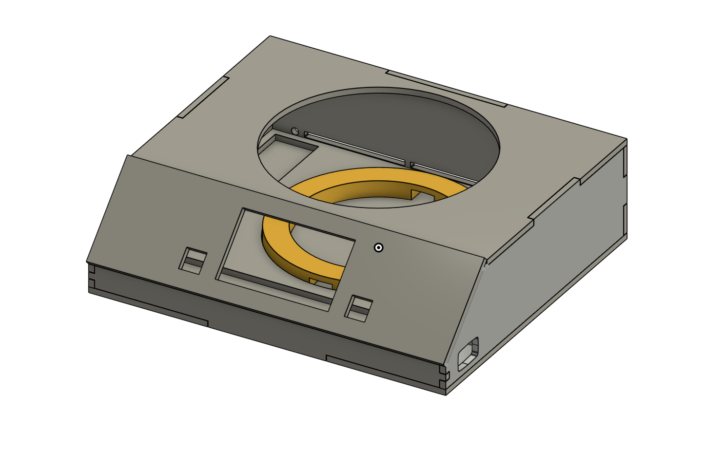
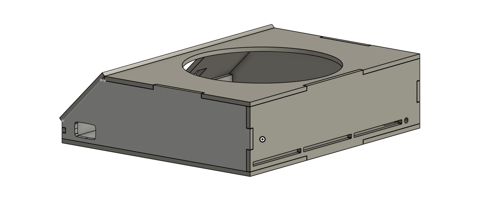
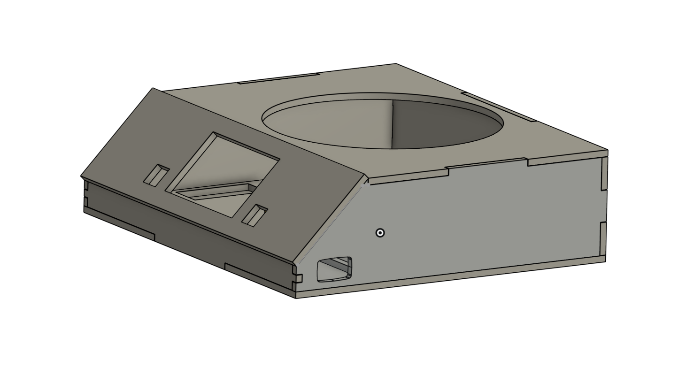
Laser Cutting and Assembly
The first laser cut failed due to an out-of-focus laser; I discarded the material, switched machines, and the second attempt produced clean cuts. Assembly was straightforward using wood glue on the interlocking joints, and the rocker switch seated perfectly, validating my tolerance calculations before the Arduino had even arrived for test-fitting.
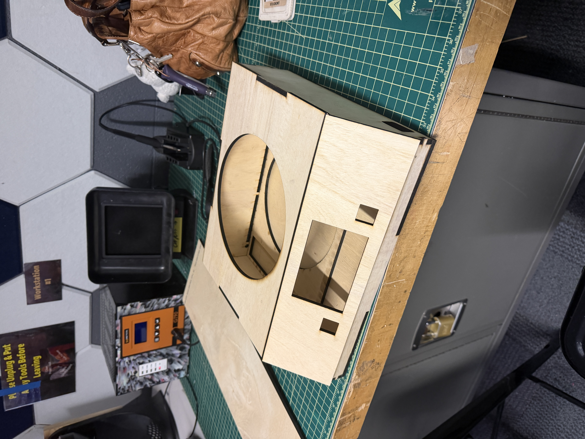
Button Supports and Final Integration
I designed and 3D printed custom support brackets for the keyboard switch boards. The first iteration was too tall, leaving the switch mechanism visible below the keycap. I also trimmed the protoboards to fit the enclosure's spacing, updated the CAD, and printed a second iteration with correct dimensions. The final result was flush-mounted, satisfying tactile buttons.
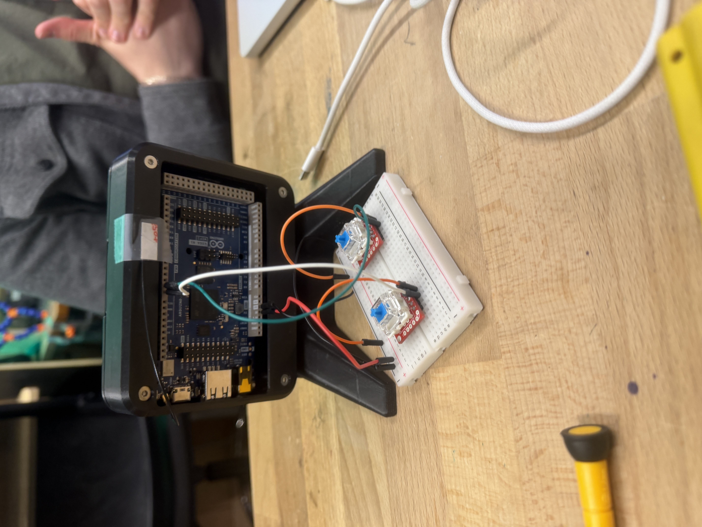
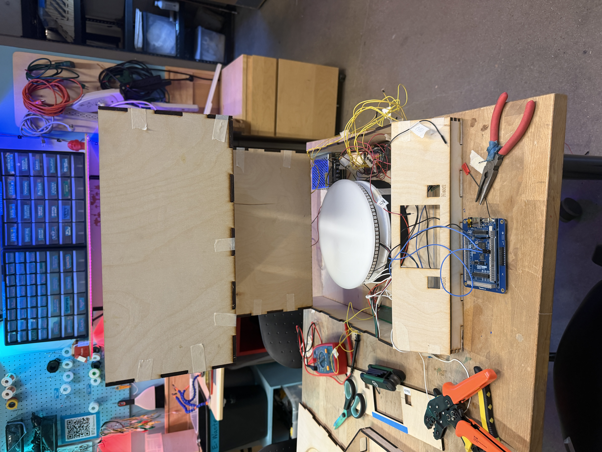
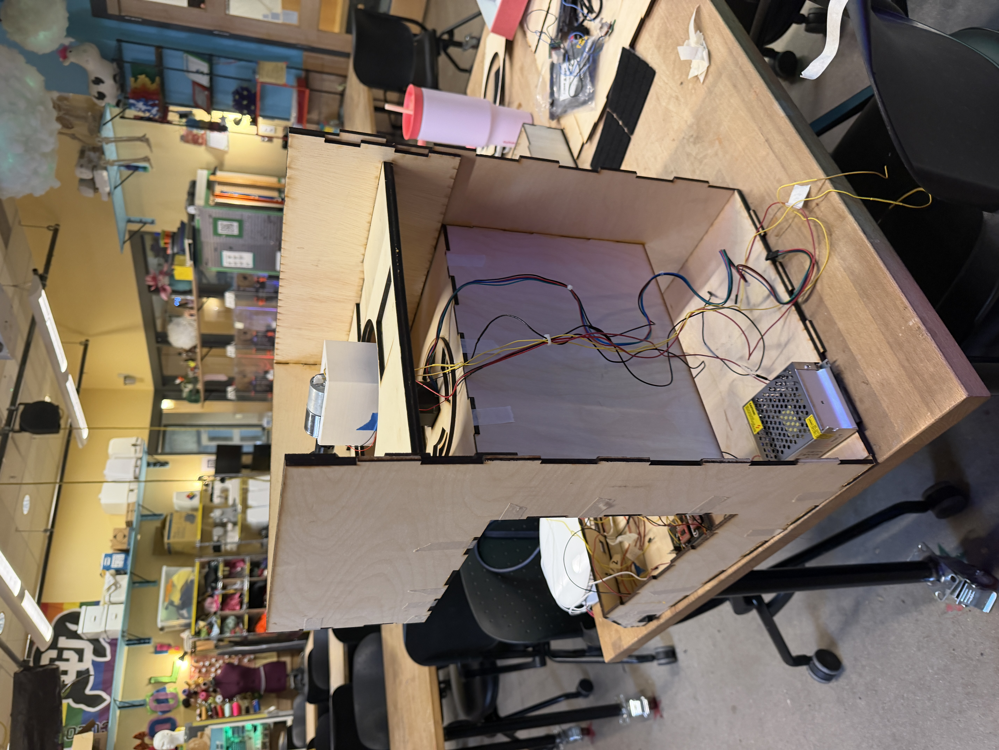
Final Pin Map
All pins were tested per subsystem then reassigned to eliminate conflicts. Assignments follow physical layout inside the enclosure so adjacent pins correspond to nearby components, minimizing wire length and crossovers.
| Variable | Pin |
|---|---|
| Back button | 12 |
| Front button | 13 |
| Scale clock (HX711) | 31 |
| Scale data (HX711) | 29 |
| NeoPixel lights | 27 |
| Linear actuator PWMA | 4 |
| Linear actuator AI1 | 5 |
| Linear actuator AI2 | 6 |
| Linear actuator STBY | 7 |
| DC motor | 8 |
| Stepper step | 23 |
| Stepper dir | 25 |
| Universal key contact | 3 |
Final Product
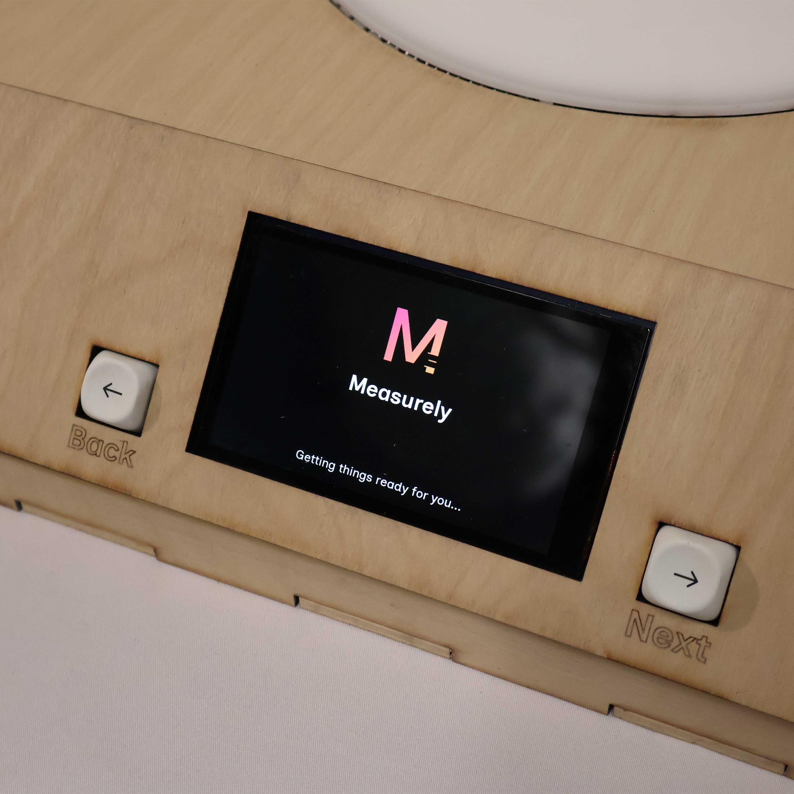
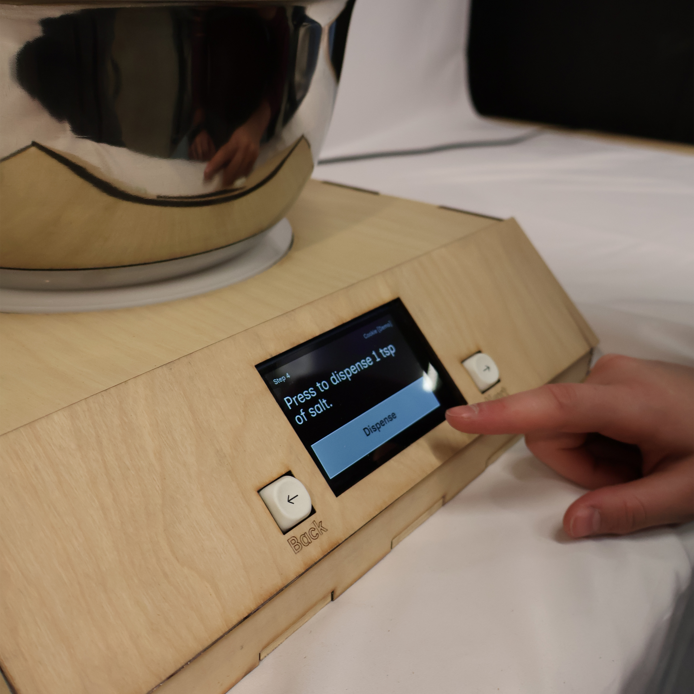